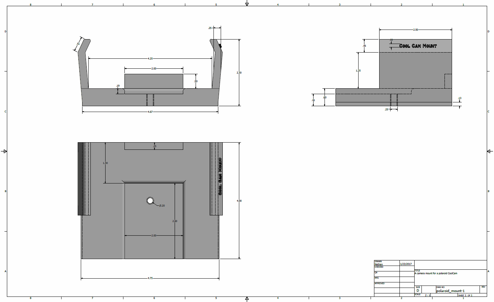
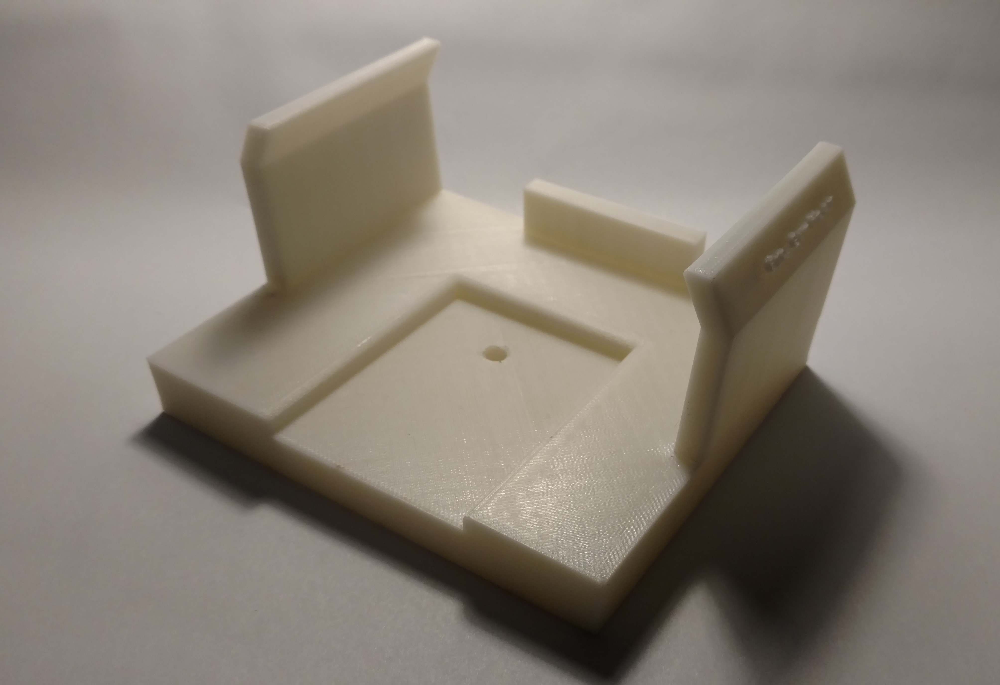

The goal of this project was to design a tripod mount for a 1988 Polaroid CoolCam in order to take a long exposure photo with the camera.
The Polaroid CoolCam is a variant of the popular 1980s box-style instant film camera. Mechanically, its operation is simple; the 600-series instant film pack
is inserted into the front film door of the camera. After the film is inserted, the camera will automatically eject the darkslide which is a piece of black
card stock that protects the undeveloped film from exposure outside of the camera. This happens because the film packs contain the battery that operates the camera.
When the pack is inserted and the film door is closed, it completes an electrical connection which activates the ejection mechanism of the camera. The unexposed film
now lies horizontally inside of the camera. When the flash bar is lifted, an electrical connection is established to the capacitors in the flash bar from the battery
in the film pack; a green light indicates when the capacitors are fully charged and the flash is ready to be used. If the flash bar is continually raised, the capacitors
will discharge and the green light will turn off, but they can be recharged by partially depressing the shutter button until the green light turns on again.
To take a picture, fully depress the shutter button. The photocell in the front of the camera determines the length of the exposure which ranges from 1/200 to 1/4
of a second. The exposure switch below the lens slides a piece of plastic with a varying amount of black lines in front of the photocell, changing the length of the
exposure. When the shutter button is pressed, the camera opens the shutter, allowing light to reflect off of a mirror in the camera and hit the film. After the
length of the exposure, the shutter slides closed and the motor ejects the film from the front of the camera. As the film ejects, the development rollers on the inside of
the film door break open the packets of development paste which are on the underside of the large, bottom border of the film. The development chemicals are spread across the
exposed film by the development rollers and the development process begins.
Polaroid discontinued the 600 series film but production rights and equipment for making the film were picked up by Impossible Project who are now the only source of
non-expired 600 series film. The chemical process used for the new film is different from the old Polaroid film, so the Impossible Project film must be shielded from
light immediately after it ejects the camera or it will continue to expose. After 8 to 10 minutes, the film can be viewed, although the colors will continue to darken.
Long exposure photography is the practice of leaving the shutter of a camera open for an extended amount of time in order to increase the amount of light that hits the camera sensor or the film. This can produce interesting effects such as trails of light from moving light sources or increased intensity from light sources in dark environments. In order to get a clear long exposure image, the camera must remain very still or the image will appear blurry; to accomplish this, the camera is typically placed on a tripod.
Cameras are typically mounted on tripods using a 1/4"-20 threaded, flat-headed screw. The Polaroid CoolCam does not have a hole for this screw and, as such, cannot be attached to a tripod in a traditional way. To resolve this problem, a mount was developed for the CoolCam which contained the threaded hole necessary to attach to the tripod. The mount was modelled in Autodesk Inventor by extrusion of a 2D sketch. The sketch was developed based on the dimensions of the camera with wings that go over edges of the camera to hold it in place. The sketch was extruded and a backplane and indentation were added by extrusion. The Inventor threaded hole generator was used to place a hole in the base of the mount to attach to the tripod.
The mount was printed with ABS plastic with .19mm line size and low infill to decrease print time. As a result, the lettering on the side of the wing of the mount was misprinted.
In modern camera such as DSLRs, the exposure time can be adjusted to a custom length of time, however, for cameras such as the Polaroid CoolCam, the exposure time is based solely on the light seen by the photocell. However, because the battery is in the film cartridge and drives all the moving elements in the camera such as the shutter and the film ejection system, blocking the battery contacts would prevent any of the mechanics from operating. The procedure for taking a long exposure Polaroid photo would then be:
Testing this on the camera with an empty pack of film demonstrates that the shutter can be held open correctly. Inserting the dark slide back into the empty film back and testing the long exposure procedure demonstrates that the film ejects from the camera slow enough to close the film door before the film ejects. This is necessary so that the film can pass through the development rollers in the front of the film door.
All that remains is to actually take the photo! The objective is to capture star trails using the long exposure technique; unfortunately San Diego has very low star visibility, so the photo will have to wait until there is an opportunity to take a drive east into the mountains where there are more visible stars.